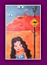
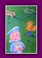

|
|
Je
suis née à Amsterdam en 1970. Très jeune, je passe mon
temps devant ma boîte à crayons avant de suivre
des cours de dessin dès l'âge de 6 ans.
Pendant mes études supérieures d'arts appliqués à Rotterdam, j'ai
débuté en freelance dans l'illustration de presse pour des journaux
urbains et underground. Ecrivain à mes heures, nourrissant une
curiosité insatiable pour toutes les formes d'art, je touche aussi à la
gravure et à la peinture.
Pour
en savoir plus, voici l'entretien réalisé le 22 mai 1999
par le magazine ARTBook.
------
Pouvez-vous vous présenter ?
Je m'appelle Karen Gijman, j'habite à Amsterdam depuis mon plus
jeune âge et je travaille comme illustratrice, essentiellement
dans le domaine de la presse.
------
A
quel âge avez-vous su que c'était le métier que vous vouliez
faire ?
A 6 ans, je savais déjà que je voulais être dessinatrice. C'est
une véritable vocation.
------
Avez-vous
suivi une formation spécifique ?
J'ai étudié l'histoire de l'art à l'Erasmus Universiteit de Rotterdam
pour posséder de bonnes références culturelles. Pour l'art de l'illustration
proprement dit, je suis autodidacte.
------
Quels
sont les personnes ou les personnages qui vous ont donné envie
de faire de l'illustration ?
Je n'ai jamais eu de héros ou de modèles. Je n'en ai pas encore
vraiment maintenant. Pour l'anecdote, je pourrais citer un peintre
anonyme rencontré à 8 ans alors que je faisais du camping avec
ma mère. Il passait ses journées à peindre sa compagne à l'huile.
Je me souviens avoir été très impressionnée par son travail et
par la multitude de pinceaux et d'outils qu'il possédait. J'ai
ensuite eu la révélation en découvrant un livre de Degas. C'est à ce
moment que j'ai commencé à me passionner pour la vie des peintres.
------
Quelles
sont vos références artistiques dans le domaine de l'illustration
?
Je n'ai pas de références à proprement parlé mais il y a des artistes
que j'aime surtout en tant qu'individus comme Jan Sanders, Johan
van Dam ou des illustrateurs de jeunesse comme Henriette Willebeek
Le Mair.
------
Etes-vous
influencée par des formes d'art indépendantes de l'illustration
et prennent-elles une part importante dans votre inspiration
?
Le cinéma est une source visuelle assez forte, l'art contemporain
aussi bien sûr. Pourtant ce n'est pas là que je vais essentiellement
puiser pour dessiner mais plutôt dans la lecture, le roman contemporain
dont les mots évoquent l'image. Mes nombreux voyages m'ont aussi
ouvert l'esprit sur des formes artistiques très éclectiques.
------
Quel élément
vous inspire en premier ?
La lecture du texte que je dois illustrer fait ressortir immédiatement
une image.
Je fais une sorte de synthèse rapide et concentrée.

A
quel support sont destinés vos dessins ?
Les magazines de mode essentiellement mais aussi la presse d'informations
et culturelle ou l'édition et le livre d'enfant. J'ai récemment
réalisé une série de dessins pour le magazine Cultuur par exemple.
------
En
quoi consiste le métier d'illustrateur de presse ?
Je travaille à partir de textes qui me sont fournis par les éditeurs.
J'accompagne les auteurs dans leur propos. L'illustration repose
sur une collaboration entre textes et dessins. Elle nécessite d'être
dans la compréhension des mots et d'ajouter en même temps quelque
chose qui peut être en décalage ou qui permet de globaliser le
contenu du texte. Le rapport au titre est aussi très important,
il est ce que l'on voit en premier avec l'illustration. On peut
jouer sur la légende de l'illustration.
------
Envisagez-vous
de travailler pour d'autres supports comme la BD ou le
livre pour enfant ?
Non, pas la bande dessinée... Le dessin ne fait plus figure d'illustration
d'un propos mais doit lui-même raconter l'histoire, c'est un autre
métier. Par contre, le livre d'enfant est un domaine dans lequel
j'ai déjà travaillé et qui me plait beaucoup. C'est un support
assez merveilleux et très large.
------
Comment
pourriez-vous décrire l'art de l'illustration en quelques
mots ?
C'est avoir une compréhension sensible d'un texte et en même temps
arriver à faire passer l'univers propre de l'illustrateur. C'est
une question de tension et de parallèle entre l'écrit et le dessiné.
------
Se
rapporte-t-il à un mouvement spécifique ?
Il n'existe pas vraiment de courant artistique dans l'illustration.
Mes dessins peuvent surtout être caractérisés par leur naïveté et
la légèreté des traits.
------
Vous
réalisez plusieurs croquis avant le dessin final
?
Non, peu de croquis. A partir du premier dessin qui me vient à l'esprit,
je peux surtout corriger les expressions et les cadrages mais je
multiplie rarement les essais.
------
Quelles techniques utilisez-vous pour
réaliser une illustration ?
Il y a deux techniques : la gravure sur bois qui permet de travailler
des choses fortes, synthétiques, noires et blanches et l'huile
qui permet de travailler avec la couleur.
------
Avez-vous des thèmes de prédilection ?
Les personnages, leur figure, les expressions, les situations et
quelques paysages.
------
Et
quels seraient ceux que vous ne pourriez absolument
pas illustrer ?
Je ne voudrais pas être complice de quelque chose de vulgaire ou
qui me dérangerait d'un point de vue éthique.
------
Chacun
de vos dessins est une pièce unique mais parmi ceux
que vous avez faits, lequel a votre préférence ?
«La petite fille au cerceau» parce que son approche assez enlevée
et légère me plait beaucoup.
------
Qu'est
ce qui fait pour vous le lien entre tous vos dessins
?
L'humour !
------
Sur
quel projet travaillez-vous en ce moment ?
Je viens de terminer une série de gravures pour un magazine de
mode et je travaille actuellement sur l'illustration d'un livre
policier pour adolescents.
|
| |
 |
 |
|
|
|
|
|
Sanne,
2001
|
Australia,
2001
|
Amy,
2001
|
|
Tim
and Lisa, 2000 |
 |
|
 |
 |
|
 |
 |
| Sans
titre, 2001 |
Fashion,
2002
|
Cat
and Dog,
2002 |
Dream,
2002
|
Women,
2001
|
|
| |
 |
 |
|
 |
|
|
Sans
titre,
2002
|
|
Sans
titre,
2002 |
Elisabeth,
2002 |
|
|
|
|
De
Amsterdammer - 25 septembre 1998
Exposition à la
Galerie Van der Lamers - Amsterdam
Karen Gijman vit à Amsterdam depuis sa plus tendre enfance. Evoluant
dans un environnement traditionnel, elle est l'artiste de la famille
et le prouve aujourd'hui en exposant parmi les plus talentueux
illustrateurs de mode et de publicité. Son style est reconnaissable
: mélodie de couleurs frémissantes, expressions réalistes mêlées à une
espiègle naïveté. Crayonnés ou huilés, ses dessins sont légers
comme des voiles et ne laisseront pas le spectateur dans l'indifférence.
A voir …
---------
Cultuur
- 06 novembre 1999
«Quand
Muller rencontre Gijman»
Le nouveau conte pour enfant signé par la divine Iva van Muller
a trouvé une illustratrice de talent dont les dessins sont en parfait
osmose avec l'onirisme de l'écrivain.
C'est
dans un monde coloré aux lignes imparfaites que Karen
Gijman nous invite au voyage. Ici, les images ne précèdent
pas les mots, elles les accompagnent dans une fluidité délicieuse.
Leurs traits sont une véritable incursion dans un univers
imaginaire mêlant réalisme, fantastique et sincérité.
Plus
qu'un dessin, l'illustration de Karen Gijman est une
véritable poésie.
---------
Grafik-art
- 20 avril 2001
«Karen
Gijman, la passion de l'illustration»
Karen vit le dessin comme une passion. Les couleurs s'harmonisent,
la peinture s'anime, elle travaille vite, sous le coup de l'inspiration,
par un détail saisi au vol. L'illustration semble chez elle accessible,
d'une facilité déconcertante.
Des dessins, ses placards en débordent, tout comme la quantité impressionnante
de pinceaux, de tubes à demi utilisés. La couleur règne, donne
vie aux traits et prodigue une sensation de chaleur aux scènes
de la vie courante : par là, une femme s'habille, par ici, des
souliers traînent… Karen donne une autre dimension aux détails,
un décor intemporel met en valeur des bas, des vêtements ou encore
un personnage sans âge.
C'est bien l'amour du détail qui motive Karen, assise tranquillement
dans sa verrière au milieu de plantes et de cactus pour dessiner
encore et encore un arrosoir en fer. La magie opère et des verts,
des rouges, des oranges explosent sur le papier. Cette contemplation
plastique de la nature morte l'aura poussée à jeter mille objets
dans autant d'environnement : " Je ne trouve aucun objet terre à terre,
j'aime à leur donner une vie, une dimension, à les mettre en scène
ou à les voir autrement plus esthétiques. " L'esprit imaginatif
de Karen, presque enfantin, magnifie toutes les petites choses
courantes, elle rend ainsi hommage au quotidien.
|
| |
|
|
| |
|
|
Rassemblées
sous la forme de coups de cœur, voici les
différentes œuvres qui m'ont touchée ou les
divers endroits qui ont contribué à faire
grandir l'artiste qui est en moi.
Mon
quartier : les
canaux
J'habite
une charmante maison de style
néoclassique sur Beethovenstraat,
au cœur de ce labyrinthe
fluide qui confère à Amsterdam
tout son charme et toute
sa personnalité. Quelques
ponts plus loin se trouve
mon antre, le café Schiller,
dont les moelleux fauteuils
de velours sont toujours
prêts à m'accueillir pour
un cappuccino ou pour une
discussion avec Gaby, son
gérant.
---------
Mon
Musée : Stedelijk
Museum -
13 Paulus Potterstraat - Amsterdam
La
ville d'Amsterdam regroupe
un ensemble impressionnant
de galeries et de musées
d'art parmi lesquels le musée
municipal compile tous ce
qu'il existe de plus significatif
dans l'art contemporain.
Renouvelée en permanence,
sa collection, où se côtoient
Manet, Cézanne, Kandinsky,
Dubuffet et le Pop Art anglais,
a su faire évoluer mon regard
artistique depuis ma plus
tendre enfance.
---------
Mon
livre de chevet : L'alchimiste -
Paulo Coelho - 1994
«Une
quête commence toujours par
la Chance du Débutant et
s'achève toujours par l'Épreuve
du Conquérant.»
Fable
philosophique d'un extraordinaire
optimisme, le roman de Coelho
est une invitation à l'aventure.
Le récit raconte le voyage
initiatique d'un jeune berger
andalou parti à la recherche
d'un trésor onirique. Ses
pas le conduisent jusqu'à l'alchimiste
qui lui dévoilera la Connaissance,
celle du sens de la vie.
A recommander à tous ceux
qui gardent enfouis au fond
d'eux l'esprit d'aventure
et qui souhaite, comme moi,
réaliser leur légende personnelle.
---------
Mon
film culte : Trainspotting -
Danny Boyle - 1996
«Choose
life. choose a job. Choose
a career. choose a family.
Choose a fucking big television,
choose washing machines,
cars, compact disk players
and electrical tin openers.
Choose good health, low cholesterol
and dental insurance. Choose
fixed-interest mortgage repayments.
Choose a starter home. choose
your friends. Choose DIY
and wondering who the fuck
u are on sunday morning.
Choose sitting on the coach
watching mind numbing, spirit-crushing
game shows, stuffing junk
food into your mouth. Choose
rotting away at the end of
it all, pishing your last
in amiserable home nothing
more than an embarassement
to the selfish, fucked-up
brats you spawned to replace
yourself. Choose your futur.
Choose life. But why would
I want to do a thing like
that ? I chose not to choose
life : I chose something
else. And the reasons ? There
are no reasons. Who needs
reasons when you've got heroin
?» Introduction
Non-conformiste,
cru et fantasmatique, le film de Dany Boyle
est une réaction contre la société conservatrice,
uniforme et banale à travers la vie dépravée
de quatre jeunes écossais d'Edimbourg. «Scabreux,
brutal et branché, Trainspotting est l'Orange
Mécanique des années 90» - Ecran
Noir.
---------
Mes
voyages : Paris -
Londres - New York
A
chaque capitale son coup de
cœur :
|
Paris :
Si Paris ne devait compter qu'un seul quartier,
ce serait celui de Montmartre qui
offre une incroyable transposition dans une
temporalité antérieure. Son dédale conserve
toute la poésie et le pittoresque du Paris
d'antan dans lequel j'apprécie particulièrement
les ballades.
|
| |
|
Londres :
Le Camden Lock Market est devenu une institution
londonienne où l'on peut trouver à loisir des
meubles, livres, bijoux et toutes sortes d'objets
du classique à l'excentrique. Mais ce qui caractérise
surtout ce marché est sa pléthore de vêtements
aussi bien futuristes que rétro. C'est un endroit
magique pour qui aime glaner, chiner et affirmer
son originalité et une source d'inspiration inépuisable…
|
| |
|
New
York :
Entre peinture, sculpture, architecture, design,
dessins, photographies, illustrations et même
vidéos, le Musée d'art Moderne de New York, dit
le MOMA,
est un véritable enchantement du premier étage
jusqu'à sa boutique. Parmi la richesse de sa
collection, ma prédilection va à l'exposition
très intime du photographe de Harlem, Roy de
Carava, avec ses clichés d'avant-garde sur New
York et les géants du jazz.
|
|
|
|
|
|
|